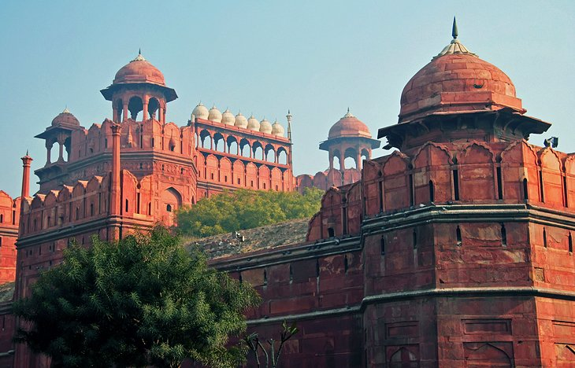
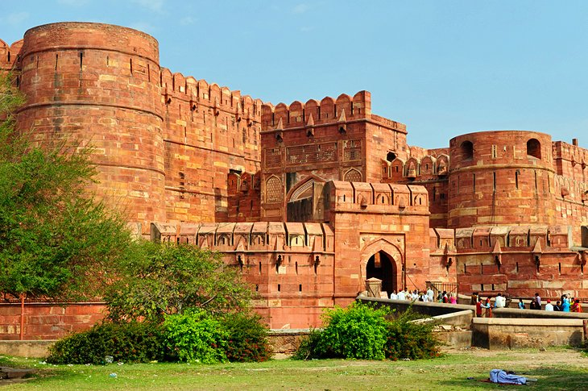

1.Mysure Palce

Mysore palace is the one of the famous historical place in India. Mysore palace is a royal residence of Wadiyar royal family in late 1920s and it is a famous tourist spot in now days. This palace located in Karnataka state and center place of mysore city. the architectural style of this palace is “indo-saracenic” style .The European languages are members of the same family. Their separate existence is a myth. For science, music, sport, etc, Europe uses the same vocabulary. The languages only differ in their grammar, their pronunciation and their most common words. Everyone realizes why a new common language would be desirable: one could refuse to pay expensive translators. To achieve this, it would be necessary to have uniform grammar, pronunciation and more common words. If several languages coalesce, the grammar of the resulting language is more simple and regular than that of the individual languages. The. it is start to built in 1897 and this works end in 1912. It is a most famous tourist spot after Taj Mahal with more 6 million annual visitors. Mysore Palace Entry Fees for adults is 40 rupees. for Children(10-18 Yrs) is 10 rupees.free for Students (Letter from School is Required). 200 per person for Foreign Tourists (Audio Kit Included). for mor details Click here
2.Taj Mahal

Taj mahal is world famous tourist spot. the export mention taj mahal is a crown of palace but most of the youngers call it as a symbol of love because it was built by the Mughal emperor shah jahan for his loveable wife Mumtaz mahal but actually Taj mahal is a tomb of queen Mumtaz. It is located in ancient city Agra. Usted Ahmad Lahauri is the main architect of taj mahal. The cost of taj mahal is 32 million in1653. This palace located in Karnataka state and center place of mysore city. the architectural style of this palace is “indo-saracenic” style .The European languages are members of the same family. Their separate existence is a myth. For science, music, sport, etc, Europe uses the same vocabulary. The languages only differ in their grammar, their pronunciation and their most common words. Everyone realizes why a new common language would be desirable: one could refuse to pay expensive translators. To achieve this, it would be necessary to have uniform grammar, pronunciation and more common words. If several languages coalesce, the grammar of the resulting language is more simple and regular than that of the individual languages. The. it is start to built in 1897 and this works end in 1912. It is a most famous tourist spot after Taj Mahal with more 6 million annual visitors. Taj mahal is one of the wonder of new 7 wonders of the world. for mor details Click here
3.The Red Fort
Red for in the capital city of India Delhi. This fort is the main residence for most of the Mughal emperors like shah Jahan. It was constructed between May 1639 and April 1648. it took almost 8 years and 10months for build. This palace located in Karnataka state and center place of mysore city. the architectural style of this palace is “indo-saracenic” style .The European languages are members of the same family. Their separate existence is a myth. For science, music, sport, etc, Europe uses the same vocabulary. The languages only differ in their grammar, their pronunciation and their most common words. Everyone realizes why a new common language would be desirable: one could refuse to pay expensive translators. To achieve this, it would be necessary to have uniform grammar, pronunciation and more common words. If several languages coalesce, the grammar of the resulting language is more simple and regular than that of the individual languages. The. it is start to built in 1897 and this works end in 1912. It is a most famous tourist spot after Taj Mahal with more 6 million annual visitors. It is built by red sandstone that is the reason of its red color. Independence Day celebration held on here. It is the one of the tourist attractions of India . for mor details Click here
4.The Ellora Caves
Ellora is a UNESCO World Heritage Site located in the Aurangabad district of Maharashtra, India. It is one of the largest rock-cut monastery-temple cave complexes in the world featuring Hindu, Buddhist and Jain monuments, and artwork, dating from the 600–1000 CE period. There are over 100 caves at the site, all excavated from the basalt cliffs in the Charanandri Hills, 34 of which are open to public. These consist of 12 Buddhist (caves 1–12), 17 Hindu (caves 13–29) and 5 Jain (caves 30–34) caves, each group representing deities and mythologies prevalent in the 1st millennium CE, as well as monasteries of each respective religion. This palace located in Karnataka state and center place of mysore city. the architectural style of this palace is “indo-saracenic” style .The European languages are members of the same family. Their separate existence is a myth. For science, music, sport, etc, Europe uses the same vocabulary. The languages only differ in their grammar, their pronunciation and their most common words. Everyone realizes why a new common language would be desirable: one could refuse to pay expensive translators. To achieve this, it would be necessary to have uniform grammar, pronunciation and more common words. If several languages coalesce, the grammar of the resulting language is more simple and regular than that of the individual languages. The. it is start to built in 1897 and this works end in 1912. It is a most famous tourist spot after Taj Mahal with more 6 million annual visitors. for mor details Click here
5. Agra Fort
Agra Fort is a historical fort in the city of Agra in India. It was the main residence of the emperors of the Mughal Dynasty until 1638, when the capital was shifted from Agra to Delhi. Before capture by the British, the last Indian rulers to have occupied it were the Marathas. In 1983, the Agra fort was inscribed as a UNESCO World Heritage site. It is about 2.5 km northwest of its more famous sister monument, the Taj Mahal. The fort can be more accurately described as a walled city.Built as a military structure in 1565 by Emperor Akbar with later additions by Shah Jahan, the stunning Agra Fort (also known as Agra's Red Fort) is an interesting mix of both Hindu and Muslim influences. This palace located in Karnataka state and center place of mysore city. the architectural style of this palace is “indo-saracenic” style .The European languages are members of the same family. Their separate existence is a myth. For science, music, sport, etc, Europe uses the same vocabulary. The languages only differ in their grammar, their pronunciation and their most common words. Everyone realizes why a new common language would be desirable: one could refuse to pay expensive translators. To achieve this, it would be necessary to have uniform grammar, pronunciation and more common words. If several languages coalesce, the grammar of the resulting language is more simple and regular than that of the individual languages. The. it is start to built in 1897 and this works end in 1912. It is a most famous tourist spot after Taj Mahal with more 6 million annual visitors. Located a little more than two kilometers from the Taj Mahal, the fort is entered through Amar Singh Gate with its low outer wall and dogleg design built to confuse attackers. Once inside, you'll see two large interlinked sandstone buildings, Akbari Mahal and Jahangiri Mahal, the largest private residence in the complex. for more details Click here
6.The Golden Temple

The Gurdwara is built around a man-made pool (sarovar) that was completed by the fourth Sikh Guru, Guru Ram Das in 1577. Guru Arjan, the fifth Guru of Sikhism, requested Sai Mir Mian Mohammed, a Muslim Pir of Lahore, to lay its foundation stone in 1589. In 1604, Guru Arjan placed a copy of the Adi Granth in Harmandir Sahib, calling the site Ath Sath Tirath. The Gurdwara was repeatedly rebuilt by the Sikhs after it became a target of persecution and was destroyed several times by the Muslim armies from Afghanistan and the Mughal Empire. The army led by Ahmad Shah Abdali, for example, demolished it in 1757 and again in 1762, then filled the pool with garbage and blood of cows. This palace located in Karnataka state and center place of mysore city. the architectural style of this palace is “indo-saracenic” style .The European languages are members of the same family. Their separate existence is a myth. For science, music, sport, etc, Europe uses the same vocabulary. The languages only differ in their grammar, their pronunciation and their most common words. Everyone realizes why a new common language would be desirable: one could refuse to pay expensive translators. To achieve this, it would be necessary to have uniform grammar, pronunciation and more common words. If several languages coalesce, the grammar of the resulting language is more simple and regular than that of the individual languages. The. it is start to built in 1897 and this works end in 1912. It is a most famous tourist spot after Taj Mahal with more 6 million annual visitors. Maharaja Ranjit Singh after founding the Sikh Empire, rebuilt it in marble and copper in 1809, overlaid the sanctum with gold foil in 1830. This has led to the name the Golden Temple. for mor details Click here
7.The Beaches of Goa

Goa is a one of the state of india and one of the most famouse turiest spot in india beaches is the main attractions of gova most of the turiest are go for goa is there deffrent culters and their turiest places like ancient forts of porthukes. goa attract more uropian turiests for india. This palace located in Karnataka state and center place of mysore city. the architectural style of this palace is “indo-saracenic” style .The European languages are members of the same family. Their separate existence is a myth. For science, music, sport, etc, Europe uses the same vocabulary. The languages only differ in their grammar, their pronunciation and their most common words. Everyone realizes why a new common language would be desirable: one could refuse to pay expensive translators. To achieve this, it would be necessary to have uniform grammar, pronunciation and more common words. If several languages coalesce, the grammar of the resulting language is more simple and regular than that of the individual languages. The. it is start to built in 1897 and this works end in 1912. It is a most famous tourist spot after Taj Mahal with more 6 million annual visitors. for mor details. paloem,cola,mobor,varca, majorda, arossim, candolim, baga, morjim is the main beaches of goa. each beches have unique attraction. for more details Click here
8.Varanasi

India is a land of cultures, religions and spirituality, therefore, an Indian exploration remains incomplete without a trip to the holy city of Varanasi. Also known as the city of ‘Moksha’, the place holds a great religious significance for Hindus. Situated on the banks of sacred river Ganga, the city is believed to be more than 5000 years old. Bustling with enchanting ancient temples and holy Ghats crowded with people performing various rituals and prayers, Varanasi makes for an ultimate spiritual travel destinations India. From paying homage to Lord Shiva in the famous ‘Kashi Vishwanath Temple’, taking a dip in holy waters of river Ganga absolving your sins, revelling in the spiritual aura of This palace located in Karnataka state and center place of mysore city. the architectural style of this palace is “indo-saracenic” style .The European languages are members of the same family. Their separate existence is a myth. For science, music, sport, etc, Europe uses the same vocabulary. The languages only differ in their grammar, their pronunciation and their most common words. Everyone realizes why a new common language would be desirable: one could refuse to pay expensive translators. To achieve this, it would be necessary to have uniform grammar, pronunciation and more common words. If several languages coalesce, the grammar of the resulting language is more simple and regular than that of the individual languages. The. it is start to built in 1897 and this works end in 1912. It is a most famous tourist spot after Taj Mahal with more 6 million annual visitors. the divine Ganga Aarti during evenings on the ‘Dasaswamedha Ghat’, taking a walk along the Ghats watching life flow by, exploring the chaotic and colourful streets teeming with life to gorging on its delicious ‘Benaras ki Chaat’ or indulging in a unique shopping experience of musical instruments and world-renowned ‘Benarasi Silk Sarees’; Varanasi is indeed an incredible place to visit in India. for mor details Click here
9.Leh-Ladakh

The land of majestic snow-capped mountains, serene alpine glacial lakes, enchanting valleys and ancient colourful Buddhist monasteries, Leh-Ladakh is one of the ‘must-visit’ destinations in India for nature lovers and people seeking peace and serenity away from the busy city lives. Being home to plenty of serene alpine glacial lakes, some of the world’s highest mountain passes and high-altitude scenic trekking trails, Ladakh is also a dream destination for intrepid travellers and adventure freaks across India and different corners of the world. Be it the feeling of extreme spirituality and divinity listening to the chants and hymns of lamas in the ‘Hemis Monastery’, the tranquillity of ‘Pangong Lake’ offering an indescribable sense of peace and solitude, an unforgettable adventurous experience of trekking on the frozen ‘Zanskar River’ This palace located in Karnataka state and center place of mysore city. the architectural style of this palace is “indo-saracenic” style .The European languages are members of the same family. Their separate existence is a myth. For science, music, sport, etc, Europe uses the same vocabulary. The languages only differ in their grammar, their pronunciation and their most common words. Everyone realizes why a new common language would be desirable: one could refuse to pay expensive translators. To achieve this, it would be necessary to have uniform grammar, pronunciation and more common words. If several languages coalesce, the grammar of the resulting language is more simple and regular than that of the individual languages. The. it is start to built in 1897 and this works end in 1912. It is a most famous tourist spot after Taj Mahal with more 6 million annual visitors., the fun of a unique sand-dune safari sitting on the back of Bactrian camel discovering the rugged landscapes of ‘Nubra Valley’ or the excitement of spotting a snow leopard in the thick of the ‘Hemis National Park’ – Ladakh has in its store, something for its every tourist. Being part of the colourful ‘Hemis Festival‘ is something which must definitely be on the itineraries of every tourist to the mystic land of Leh-Ladakh for mor details Click here
10.Periyar National Park

One of South India's most popular tourist attractions, Periyar National Park and Wildlife Sanctuary is centered around a lake built by British engineers in 1895 for irrigation and to provide water to the city of Madurai. Established in 1934, this beautiful park is home to numerous species of mammals, including a large free-roaming Indian elephant population, wild boar, otters, the lion-tailed macaque, and more than 20 Bengal tigers. Bird watching is a popular activity with frequent sightings of species such as darters, storks, kingfishers, hornbills, and racket-tailed drongos, This palace located in Karnataka state and center place of mysore city. the architectural style of this palace is “indo-saracenic” style .The European languages are members of the same family. Their separate existence is a myth. For science, music, sport, etc, Europe uses the same vocabulary. The languages only differ in their grammar, their pronunciation and their most common words. Everyone realizes why a new common language would be desirable: one could refuse to pay expensive translators. To achieve this, it would be necessary to have uniform grammar, pronunciation and more common words. If several languages coalesce, the grammar of the resulting language is more simple and regular than that of the individual languages. The. it is start to built in 1897 and this works end in 1912. It is a most famous tourist spot after Taj Mahal with more 6 million annual visitors. along with many interesting varieties of butterflies. for mor details Click here